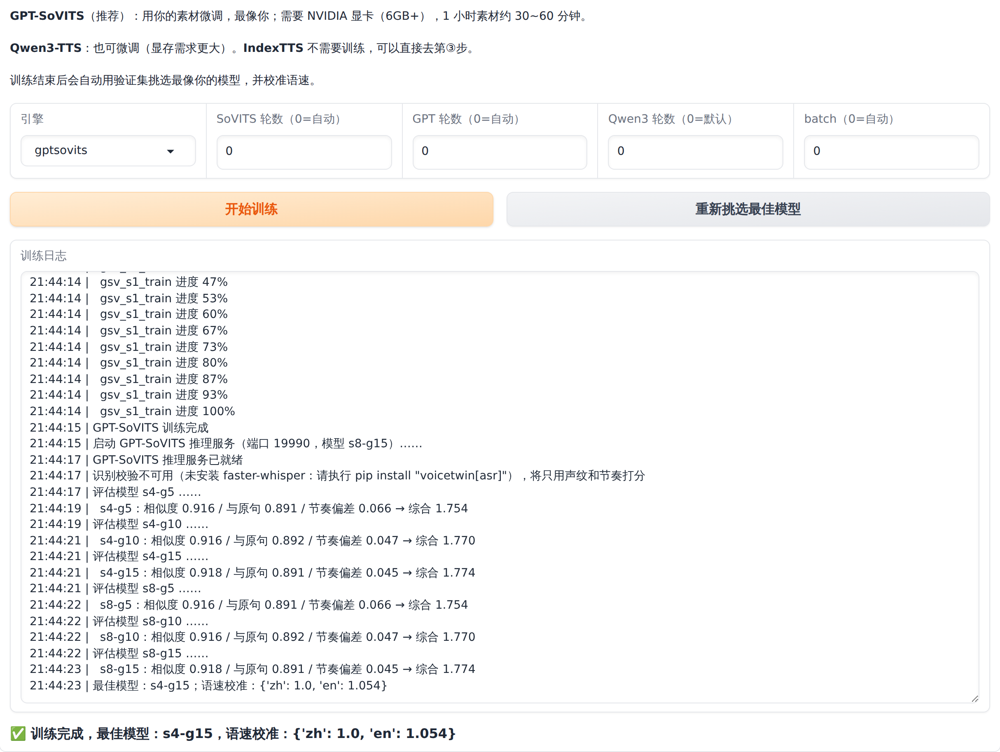
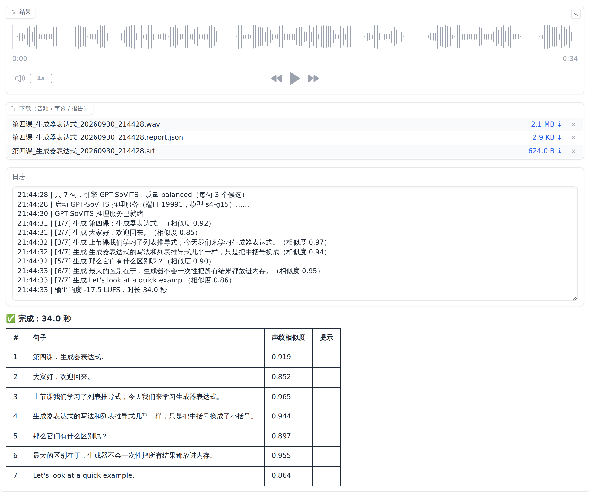

这一步在 ② 训练模型 页面完成。训练是让模型反复"听"你的素材、学会你的声音的过程，全部自动进行。训练结束后，程序还会自动挑选最像你的模型版本，并校准语速。

训练日志会依次经过下面这些阶段：
| 日志内容 | 这一阶段在做什么 |
|---|---|
训练素材：N 条，X 分钟；实验名 vt_…… | 整理出参加训练的片段（验证集除外）。"实验名"是模型文件的名字前缀。 |
训练参数：batch=6，SoVITS 8 轮，GPT 15 轮（显存 12.0 GB） | 程序根据你的显存和素材多少自动决定的训练参数。 |
1A 文本处理（音素 + BERT 特征） | 把文字转换成发音信息。 |
1B 提取 HuBERT 特征与说话人声纹 | 提取每段录音的声音特征和你的声纹。 |
1C 提取语义 token | 把声音转换成模型能学习的"语义单位"。 |
训练音色模型 SoVITS（共 8 轮）……gsv_s2_train 进度 25% | 学习你的音色。每完成一轮，进度增加一点；每一轮可能需要几分钟。 |
训练语气与节奏模型 GPT（共 15 轮）……gsv_s1_train 进度 20% | 学习你的语气和节奏。 |
启动 GPT-SoVITS 推理服务……已就绪 | 准备用训练好的模型试着说话。 |
评估模型 s4-g5 ……s4-g5：相似度 0.925 / 与原句 0.901 / 节奏偏差 0.076 → 综合 1.765 | 逐个"考试"：让每个模型版本读验证集的句子，和你的原声比较。s4-g5 表示"音色模型第 4 轮 + 语气模型第 5 轮"的组合。 |
最佳模型：s8-g15；语速校准：{'zh': 1.04, 'en': 1.0} | 综合分最高的组合被选为默认模型；语速校准 1.04 表示模型读得稍慢，生成时自动加快 4%。 |
| 显卡 | 30 分钟素材 | 1 小时素材 | 3 小时素材 |
|---|---|---|---|
| RTX 3060 / 4060 | 约 20~40 分钟 | 约 40~90 分钟 | 约 2~4 小时 |
| RTX 3080 / 4070 | 约 15~25 分钟 | 约 25~50 分钟 | 约 1.5~2.5 小时 |
| RTX 4090 / 5090 | 约 8~15 分钟 | 约 15~30 分钟 | 约 45~90 分钟 |
以上是粗略估计，实际时间受显卡、CPU、硬盘速度和素材情况影响。
训练过程中，程序会在不同阶段保存多个模型版本（例如音色模型第 4、8 轮，语气模型第 5、10、15 轮）。训练得太少不够像，训练得太多又可能"学过头"（变得不自然）。 哪个版本最像你？程序不靠猜，而是用第 6 章留出的"验证集"——你的真实录音、没有参加训练——来考试：
综合分最高的版本成为默认模型；同时根据"时长比"算出语速校准系数，让生成的语速和你本人一致。这一切都是自动的，你不需要做任何设置。
| 情况 | 怎么做 |
|---|---|
| 增加了新的讲课素材 | ① 准备素材 → 开始准备素材（只处理新文件）→ ② 开始训练 |
| 在训练之后才校对了文字 | 保存校对后 → ② 开始训练 |
| 删掉了一些不好的片段 | 保存校对后 → ② 开始训练 |
| 只想重新挑选最佳模型（例如装好了识别模型后想加上错字率评分） | ② 点 重新挑选最佳模型（很快，不需要重新训练） |
一般不需要改。如果你想自己控制：
| 参数 | 自动值 | 说明 |
|---|---|---|
| SoVITS 轮数 | 素材 <30 分钟：8 ≥30 分钟：12 | 音色训练的轮数，最大 25。太多可能不自然。 |
| GPT 轮数 | 15 | 语气节奏训练的轮数。素材很多时可以试试 20。 |
| batch | 显存 GB ÷ 2 | 每次一起训练多少条。显存不足（报 out of memory）时改小，例如 2。 |
这一步在 ③ 生成讲课音频 页面完成，也是你以后每天都会用的功能：粘贴讲稿，点"生成"，得到用你的声音读出来的讲课音频和字幕。
讲稿就是你要"说"的内容。可以直接在网页里粘贴文字，也可以上传文件（txt、md、srt、docx）。写法很简单：
[停顿=2]（2 秒）。# 第四课：生成器表达式 这样的写法，会被读出来并在后面停顿。更多写法（Markdown、读音纠正、按字幕时间轴生成等）见第 10 章。
| 设置 | 推荐值 | 说明 |
|---|---|---|
| 讲稿 | — | 粘贴讲稿文字。 |
| 或上传讲稿文件 | — | 上传 txt / md / srt / docx 文件。上传了文件时，以文件为准，上面文本框的内容会被忽略。 |
| 引擎 | gptsovits | 用你训练好的 GPT-SoVITS 模型。（qwen3tts、indextts 是可选引擎，见 13.4 节；dummy 是测试用的，不要选。） |
| 质量 | balanced / best | 见下表。 |
| 语速倍数 | 1.0 | 1.0 表示和你本人一样快（程序已自动校准）。想整体快一点调到 1.05，慢一点调到 0.95。 |
| 指定参考音频 id | 留空 | 留空时程序自动选择（疑问句用疑问参考、陈述句用陈述参考）。想固定某种语气，可以填一个参考音频的 id（13.2 节）。 |
| 只重新生成第几句 | 留空 | 第一次生成留空。对某几句不满意时填编号（9.5 节）。 |
| 质量档位 | 每句生成几个版本 | 速度 | 适合 |
|---|---|---|---|
| fast | 1 个 | 最快 | 先快速试听讲稿内容 |
| balanced | 3 个，自动挑最像的 | 中等 | 日常使用（默认） |
| best | 5 个，还会用识别模型检查漏字、读错，不合格自动重试 | 最慢 | 正式发布的课程 |
[3/7] 生成 上节课我们学习了……（相似度 0.97）。
| 列 | 含义 |
|---|---|
| # | 句子编号（重新生成某一句时用这个编号）。 |
| 句子 | 这一句的文字（长句子会被自动拆成几段，每段一个编号）。 |
| 声纹相似度 | 这一句和你的声纹有多像：≥0.86 非常像；0.78~0.86 比较像；0.70~0.78 有点像；<0.70 不太像。 |
| 提示 | 程序发现的可能问题，例如"语速过快/可能漏读""句中有 1.5s 的异常停顿""识别错字率 35%"。有提示的句子建议试听一下，不满意就重新生成。 |
下载的 .report.json 报告文件里有更详细的信息（每句的开始/结束时间、使用的参考音频、随机种子等），一般不需要看。
听完后如果某几句不满意（语气不对、有杂音、读错字），不需要全部重新生成：
3,5。可以写范围，例如 8-10 表示第 8、9、10 句；可以混合，例如 3,5,8-10。best 档；④ 指定一个语气更合适的参考音频（13.2 节）。除了在网页上下载，所有生成的文件也自动保存在：D:\VoiceTwin\workspace\我的声音\outputs\
| 文件 | 说明 |
|---|---|
第四课_生成器表达式_20260930_213825.wav | 生成的音频。文件名 = 讲稿第一行（或讲稿文件名）+ 生成时间。 |
……_213825.srt | 字幕文件，时间轴和音频对应。 |
……_213825.report.json | 生成报告。 |
音频的音量已经自动调整到和你原来的录音一致，可以直接剪进课程视频里。想输出 mp3 格式，见 13.3 节的 output_format 设置。
第01课.md、第02课.md。